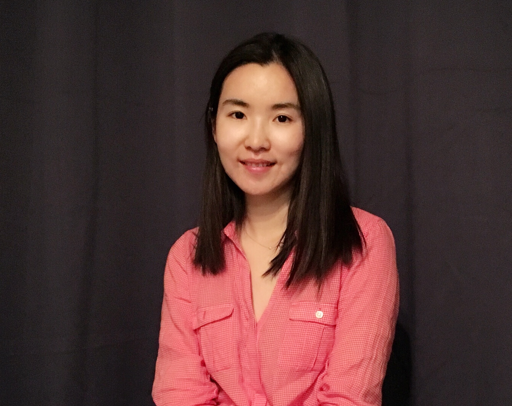

Contact
Office: IPAM 1129, UCLA. Email: fei dot feng at math dot ucla dot edu
About Me
I am a fifth-year Ph.D. candidate at UCLA Math Department. I am fortunate to be co-advised by Dr. Wotao Yin and Dr. Lin Yang. My research interests are optimization, reinforcement learning (RL), and parallel computing. I enjoy applying mathematics theory to solve real-world problems.
Currently, I am working on
- Efficient exploration in RL;
- Function approximation in RL;
- RL and learning-to-optimize.
I have a lot of hobbies, including singing, dancing, traveling, photography, painting, and reading. I love my life and appreciate every little beauty in this world.
Updated in Dec. 2020.
Publications and Presentations
- Provably Efficient Exploration for RL with Unsupervised Learning.[Image]
Fei Feng, Ruosong Wang, Wotao Yin, Simon S. Du, Lin F. Yang
- NeurIPS 2020 Spotlight.
- Invited speaker at RL Theory Seminars.
- Short version accepted by ICML 2020 Workshop: Theoretical Foundations of RL.
- How Does An Approximate Model Help in Reinforcement Learning? [Preprint]
Fei Feng, Wotao Yin, Lin F. Yang
- AsyncQVI: Async-parallel Q-Value Iteration for RL. [AISTATS 2020][Code][Slides]
Yibo Zeng, Fei Feng, Wotao Yin
- Invited speaker at INFORMS 2019 Seattle
- 2019 Southern California Applied Mathematics Symposium (SOCAMS) [Poster]
- Acceleration of SVRG and Katyusha X by Inexact Preconditioning. [ICML 2019][Code]
Yanli Liu, Fei Feng, Wotao Yin
- A2BCD: Asynchronous Acceleration with Optimal Complexity. [top-rated at ICLR 2019]
Robert Hannah, Fei Feng, Wotao Yin
Awards
- Girsky Student Award, Department of Mathematics, UCLA, 2020-2021.
- Academy Scholarship (5%), Department of Mathematics, Fudan University.
- Outstanding Student Scholarship (15%), Department of Mathematics, Fudan University.
- Talented Student Scholarship, Zhide Shuyuan, Fudan University.
- Meritorious Winner, Interdisciplinary Contest in Modeling, 2014.
- First-class Prize, East China Cup Contest in Modeling, 2014.
- Team Champion, Group National Cheerleading League of ADIDAS Dancing, Shanghai Station, 2013.
- Champion, Contest of Top Ten Singers, Department of Mathematics, Fudan University, 2012.